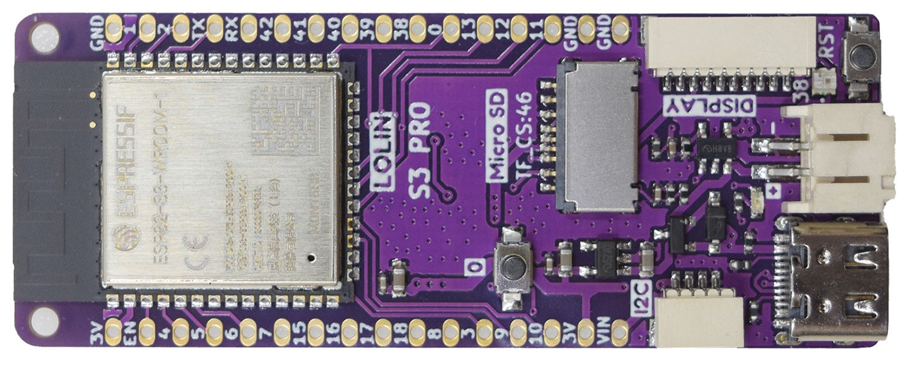
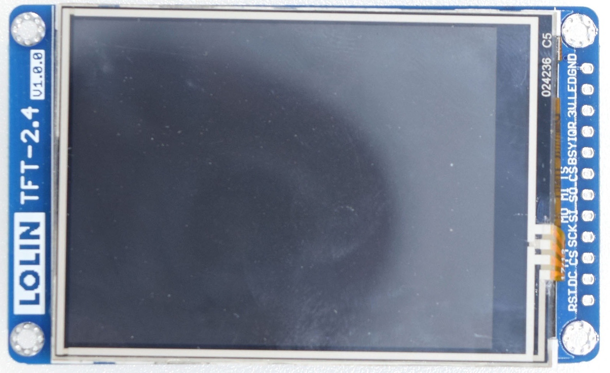

Welcome to KegMon - Keg Level Monitor¶
Note
Reflects version v2.0.0, Last updated 2026-01-25
Introduction¶
KegMon is an open-source keg monitoring system designed for homebrewers to track beer levels, pours, and environmental conditions in real-time. The software is tailored to personal needs and integrates with popular services like Brewfather, BrewSpy, and Home Assistant. Suggestions for additional integrations are welcome—feel free to raise requests on GitHub.
The system features two primary interfaces: a graphical TFT display on the device and a web-based interface accessible from any browser. It uses advanced filtering algorithms to compensate for the unpredictability of inexpensive load cells, ensuring stable and accurate readings.
To detect level changes, KegMon employs a dual-filter approach: a fast filter triggers the system into a “pouring” state upon initial weight changes, while slower filters validate the event by measuring the weight drop per second (slope). This helps distinguish genuine pours from minor fluctuations.
The system can handle multiple consecutive pours by stabilizing readings and splitting volume based on configured glass sizes, provided the weight exceeds a single glass threshold. It’s designed for up to 4 kegs but automatically detects the number of connected HX711 boards and can adapt to fewer. Future expansions may support up to 8 kegs.
The v2.0.0 update is backward-compatible with scales from previous versions, requiring only a controller upgrade. The project includes:
Software for managing scales, processing readings, and providing interfaces.
Hardware designs using standard HX711 AD converters, load cells, and temperature sensors.
3D models for keg bases and display enclosures.
Hardware Options¶
Board¶
The current version exclusively supports the Lolin ESP32 S3 PRO board, which provides the dual-core processing needed for background tasks and advanced filtering. It includes an onboard SD card slot and connectors for the TFT display.
{kind=link}

Display¶
Two display options are supported:
Lolin TFT 2.4” – A compact touchscreen for local interaction.
{kind=link}

HX711¶
For the ADC (HX711 board), the Purple or Red variants are recommended, as the project’s PCB is designed for their pinout. Green boards have a different pinout and are not compatible.

Note: Inexpensive green HX711 boards cannot be used, as they do not support the 80 samples per second mode required for effective filtering.
Temperature Sensor¶
The system supports DS18B20 one-wire temperature sensors, with the ability to use one per scale base for precise monitoring of each keg’s environment.
Credits¶
Thanks to the following projects and libraries that made KegMon possible:
Contents:
- Functionality
- Releases
- Building a device
- Software Installation
- Configuration
- Index
- Device - Settings
- Device - Calibration
- Device - Stability
- Device - WiFi
- Taps - Settings
- Taps - Beers
- Taps - History
- Integration - Home Assistant
- Integration - Brewfather
- Integration - Brewspy
- Integration - Barhelper
- Integration - Influx
- Serial Console
- Backup & Recovery
- Firmware Update
- Support
- Tools
- Licence
- Development
- Q & A